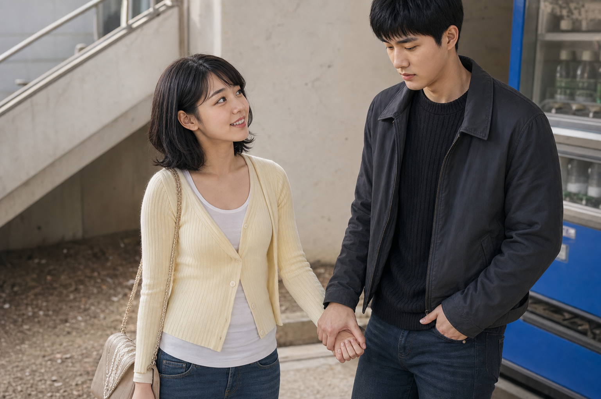

168. 한 폰 안에서
3월 9일 월요일 오후, 매점 앞에는 아직 겨울 냄새가 덜 빠진 바람이 불었다.
정다은은 팔짱을 낀 채 자판기 옆에 서 있었다. 중단발까지 내려온 머리끝이 바람에 살짝 흔들렸고, 볼살이 빠진 얼굴선 때문에 웃지 않을 때는 전보다 훨씬 날카로워 보였다. 용식은 매점 문을 밀고 나오다가 그 시선을 바로 맞았다.
피할 수 없는 자리였다.
[정다은] "왜 피해."
[김용식] "안 피했는데."
[정다은] "방금 눈 마주치고 다른 데 보던데."
용식은 손에 든 캔커피를 한 번 굴렸다. 차가운 알루미늄이 손바닥에 닿았다. 정다은은 예전처럼 장난스럽게 웃었지만, 그 웃음 뒤에 한 걸음도 물러서지 않겠다는 기색이 있었다. 초연과 헤어졌다는 소문이 퍼진 뒤로, 다은은 더 이상 빙빙 돌지 않았다.
[정다은] "너 요즘 나한테 뭐야."
말이 매점 앞 소음 사이로 떨어졌다. 다른 동기 몇 명이 지나가며 둘을 힐끗 봤다. 용식은 그 시선이 싫어서, 아니 싫은 척하면서도 어딘가 짜릿해서, 캔커피 뚜껑을 따지 못한 채 서 있었다.
[김용식] "갑자기 왜."
[정다은] "갑자기 아니잖아. 나 차 태워 줬고, 전화 받았고, 어제도 문자했잖아."
[김용식] "그게 뭐."
[정다은] "그게 뭐냐고 묻는 게 웃기지 않아?"
정다은은 한 발 가까이 왔다. 팔짱이 풀렸고, 손끝이 용식의 소매를 아주 가볍게 잡았다가 놓았다. 예전 같으면 초연의 시선부터 떠올랐을 장면이었다. 지금은 달랐다. 초연은 없었다. 초연은 공식적으로 끝난 사람이었고, 정류장에서 다른 남자 품에 안긴 사람이었다.
그 생각이 이상한 명분처럼 올라왔다.
용식은 그 명분이 얼마나 비겁한지 알면서도 놓지 않았다.
[정다은] "나 갖고 노는 거면 말해. 나도 그 정도는 알아서 빠질 수 있어."
[김용식] "그런 거 아니야."
[정다은] "그럼 뭔데."
정다은의 목소리가 낮아졌다. 매점 앞에서 이렇게 묻는 게 일부러인지, 더는 참을 수 없어서인지 용식은 구분하지 못했다. 다은은 사람 많은 곳을 무서워하지 않았다. 오히려 사람들 사이에서 용식이 더 오래 거짓말하지 못한다는 걸 아는 얼굴이었다.
용식은 주변을 봤다. 동기 둘이 컵라면 물을 받다가 이쪽을 슬쩍 보고 있었다. 누군가는 이미 입꼬리를 올렸다. 용식이랑 초연이 헤어졌대. 정다은이 요즘 다시 붙던데. 그런 말이 종이컵 커피처럼 싼 온도로 돌아다니고 있었다.
[김용식] "나도 잘 모르겠는데."
정다은의 눈썹이 움직였다.
[정다은] "그 말 제일 별로야."
용식은 대답 대신 매점 옆으로 걸었다. 정다은이 따라왔다. 학생회관 벽 뒤쪽, 담배 냄새와 눅눅한 흙냄새가 섞인 좁은 자리까지 오자 지나가는 사람이 줄었다. 용식은 그제야 숨을 조금 내쉬었다.
[김용식] "모르겠다고 한 건, 너 싫다는 뜻 아니야."
[정다은] "그럼 좋아한다는 뜻이야?"
정다은은 바로 물었다.
용식은 잠깐 웃을 뻔했다. 너무 빠른 질문이라서가 아니라, 자신이 이 질문을 기다렸다는 사실이 어이없어서였다. 서윤에게는 이미 여자친구라고 말했다. 자취방 냉장고를 채웠고, 관리비를 보탰고, 밤마다 보고 싶다고 말했다. 그런데 지금, 캠퍼스 벽 뒤에서 정다은에게도 같은 종류의 문을 열려 하고 있었다.
그는 문을 열기 전에 한 번쯤 멈춰야 했다.
멈추지 않았다.
[김용식] "응."
정다은의 얼굴에서 장난기가 조금 빠졌다.
[정다은] "뭐가 응인데."
[김용식] "좋아한다는 뜻."
바람이 잠깐 멎었다. 자판기 모터 돌아가는 소리가 뒤쪽에서 낮게 울렸다. 정다은은 한동안 용식을 봤다. 확인하려는 얼굴이었다. 이 말을 가지고 도망칠 사람인지, 아니면 정말 잡아도 되는 사람인지 재는 표정.
[정다은] "그럼 우리 사귀는 거야?"
용식의 폴더폰이 그 순간 울렸다.
같은 폰이었다.
주머니 안에서 진동이 길게 울리자, 용식의 표정이 미세하게 굳었다. 정다은은 그 반응을 놓치지 않았다. 누군지 묻지는 않았다. 대신 눈만 폰 쪽으로 내려갔다.
용식은 화면을 꺼내 보지 않았다. 꺼내면 이름이 보일 수 있었다. 다은이 이름을 보더라도 그게 곧 진실이 되는 건 아니었다. 하지만 지금 이 순간엔 이름 하나도 위험했다. 그는 폰을 손안에서 눌러 진동만 끊었다.
[정다은] "안 받아?"
[김용식] "나중에."
[정다은] "중요한 전화면 받아."
[김용식] "아니야."
정다은은 더 캐묻지 않았다. 그게 오히려 더 불편했다. 그녀는 모르는 것을 모른 채로 두는 사람이 아니었다. 다만 지금은 자기 질문의 답이 먼저였다.
[정다은] "대답해."
용식은 폰을 주머니에 넣었다.
[김용식] "사귀자."
정다은은 바로 웃지 않았다. 고개를 조금 숙인 채 입술을 깨물었다. 그러다 아주 작게 숨을 뱉었다. 긴장을 웃음으로 바꾸려는 사람처럼 어깨가 내려갔다.
[정다은] "너 진짜 나쁜 애다."
[김용식] "왜."
[정다은] "내가 이렇게 물어보게 만들었잖아."
[김용식] "미안."
[정다은] "그 미안하다는 말, 자주 하지 마. 싫어."
정다은이 손을 내밀었다. 용식은 그 손을 봤다. 얇아진 손목, 손톱 끝에 묻은 연한 분홍색 매니큐어, 바람에 살짝 차가워진 손등. 그는 손을 잡았다. 처음엔 손가락만 걸쳤다. 다은이 힘을 주자 손바닥이 붙었다.

그 순간 폴더폰이 다시 울렸다.
이번엔 짧은 문자 진동이었다. 주머니 안에서 한 번, 두 번, 끊어졌다.
서윤일 가능성이 높았다. 낮 수업 끝났냐고 물었거나, 저녁에 올 거냐고 물었거나, 냉장고에 있는 반찬 중 뭘 데울지 물었을 것이다. 서윤의 방 안에는 용식이 사다 둔 히터가 있고, 용식이 바꿔 단 형광등이 있고, 용식이 채운 냉장고가 있었다.
그리고 지금 용식의 손에는 정다은의 손이 있었다.
정다은이 손가락을 조금 조였다.
[정다은] "또?"
[김용식] "광고 문자겠지."
[정다은] "요즘 광고 문자는 사람 손 굳게 하나 봐."
정다은은 웃었지만, 그 웃음은 완전히 믿는 웃음이 아니었다. 그래도 캐묻지는 않았다. 지금은 막 사귀자는 말을 받아낸 첫 순간이었다. 그 순간을 망치고 싶지 않은 사람처럼, 그녀는 용식의 손을 놓지 않았다.
둘은 학생회관 뒤편 계단에 잠깐 앉았다. 멀리 운동장에서는 누군가 공을 차는 소리가 났고, 캠퍼스 스피커에서는 동아리 홍보 방송이 흐렸다. 정다은은 용식의 어깨에 아주 살짝 기대었다가, 금방 다시 떨어졌다.
[정다은] "그럼 나 이제 조수석 타도 되는 거지?"
[김용식] "전에도 탔잖아."
[정다은] "그때랑 다르잖아."
[김용식] "응. 달라."
짧은 대답이었다. 그런데 정다은은 그걸로 충분한 얼굴을 했다. 그녀가 웃자 볼 아래쪽에 희미하게 그림자가 생겼다. 전보다 슬림해진 얼굴선이 그 웃음을 더 또렷하게 만들었다.
용식은 그 얼굴을 보며 잠깐 아무 생각도 하지 않으려 했다.
하지만 주머니 속 폴더폰이 무거웠다.
같은 기계 안에 서윤과 다은이 같이 있었다. 같은 주소록, 같은 문자함, 같은 수신음. 용식은 조금 전까지 그게 당연하다고 생각했다. 숨기면 됐다. 늦게 답하면 됐다. 이름을 바꾸면 됐다.
아니었다.
한 폰으로는 안 됐다.
그날 저녁, 용식은 정다은을 수원 방향 버스정류장까지 태워 주고 나서도 바로 서윤에게 가지 못했다. 학교 근처 도로를 한 바퀴 더 돌았다. 손목시계가 여섯 시를 넘겼고, 서윤의 문자는 세 통이 되어 있었다.
용식은 답장을 쓰다 지웠다.
보내고 나서야 숨이 나왔다. 그는 정다은에게도 문자를 보냈다.
곧 답이 왔다.
용식은 화면을 오래 봤다. 방금 자신이 만든 단어가 화면 안에서 너무 쉽게 굳어졌다.
남자친구.
서윤에게도, 다은에게도.
그는 폴더폰을 닫았다. 딸깍, 소리가 유난히 크게 났다.
차 안에 혼자 남은 용식은 핸들 위에 두 손을 올렸다. 한쪽으로는 서윤의 자취방 불빛이 떠올랐고, 다른 한쪽으로는 다은이 방금 손을 잡던 감각이 남았다. 둘 다 놓고 싶지 않았다. 둘 다 걸리면 끝이었다.
그러니까 방법이 필요했다.
폰 하나로는 안 되겠다.
### 삽화 후보
- 매점 뒤 계단에서 정다은이 용식의 손을 잡고 관계를 확인하는 장면. 중단발과 슬림해진 얼굴선, 캠퍼스 바람, 주머니 속 폴더폰 진동을 강조.
- 차 안에서 용식이 한 폰에 겹친 서윤 문자와 다은 문자를 번갈아 보는 장면. 얼굴은 반쯤 어둡고, 폴더폰 화면 빛이 손에 비치는 구도.